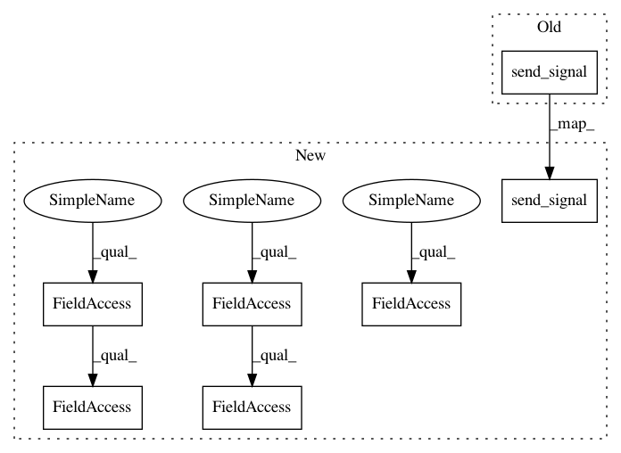

79c104e62b5a851fc543ea8b4223475325d600f0,Orange/widgets/unsupervised/tests/test_owhierarchicalclustering.py,TestOWHierarchicalClustering,test_annotation_settings_retrieval,#TestOWHierarchicalClustering#,60
Before Change
self.assertEqual(widget.annotation, "None")
self.send_signal("Distances", dist_names)
self.assertEqual(widget.annotation, "Enumeration")
self.send_signal("Distances", dist_no_names)
self.assertEqual(widget.annotation, "None")
def test_domain_loses_class(self):
widget = self.widget
After Change
numpy.zeros((4, 4)), self.data, axis=0)
dist_no_names = Orange.misc.DistMatrix(numpy.zeros((10, 10)), axis=1)
self.send_signal(self.widget.Inputs.distances, self.distances)
// Check that default is set (class variable)
self.assertEqual(widget.annotation, self.data.domain.class_var)
var2 = self.data.domain[2]
widget.annotation = var2
// Iris now has var2 as annotation
self.send_signal(self.widget.Inputs.distances, dist_no_names)
self.assertEqual(widget.annotation, "Enumeration") // Check default
widget.annotation = "None"
// Pure matrix with axis=1 now has None as annotation
self.send_signal(self.widget.Inputs.distances, self.distances)
self.assertIs(widget.annotation, var2)
self.send_signal(self.widget.Inputs.distances, dist_no_names)
self.assertEqual(widget.annotation, "None")
self.send_signal(self.widget.Inputs.distances, dist_names)
self.assertEqual(widget.annotation, "Name") // Check default
widget.annotation = "Enumeration"
// Pure matrix with axis=1 has Enumerate as annotation
self.send_signal(self.widget.Inputs.distances, self.distances)
self.assertIs(widget.annotation, var2)
self.send_signal(self.widget.Inputs.distances, dist_no_names)
self.assertEqual(widget.annotation, "None")
self.send_signal(self.widget.Inputs.distances, dist_names)
self.assertEqual(widget.annotation, "Enumeration")
self.send_signal(self.widget.Inputs.distances, dist_no_names)
self.assertEqual(widget.annotation, "None")
In pattern: SUPERPATTERN
Frequency: 3
Non-data size: 7
Instances
Project Name: biolab/orange3
Commit Name: 79c104e62b5a851fc543ea8b4223475325d600f0
Time: 2017-05-31
Author: jerneju@gmail.com
File Name: Orange/widgets/unsupervised/tests/test_owhierarchicalclustering.py
Class Name: TestOWHierarchicalClustering
Method Name: test_annotation_settings_retrieval
Project Name: biolab/orange3
Commit Name: 7f61d846199a0245f0fd760885015ca5fda7833d
Time: 2017-03-24
Author: tomaz.hocevar@fri.uni-lj.si
File Name: Orange/widgets/unsupervised/tests/test_owdistances.py
Class Name: TestOWDistances
Method Name: test_mahalanobis_error
Project Name: biolab/orange3
Commit Name: 79c104e62b5a851fc543ea8b4223475325d600f0
Time: 2017-05-31
Author: jerneju@gmail.com
File Name: Orange/widgets/unsupervised/tests/test_owhierarchicalclustering.py
Class Name: TestOWHierarchicalClustering
Method Name: test_annotation_settings_retrieval
Project Name: biolab/orange3
Commit Name: d6f783799ef59694176134269757730df059ab69
Time: 2017-05-31
Author: jerneju@gmail.com
File Name: Orange/widgets/data/tests/test_owmergedata.py
Class Name: TestOWMergeData
Method Name: test_input_remove